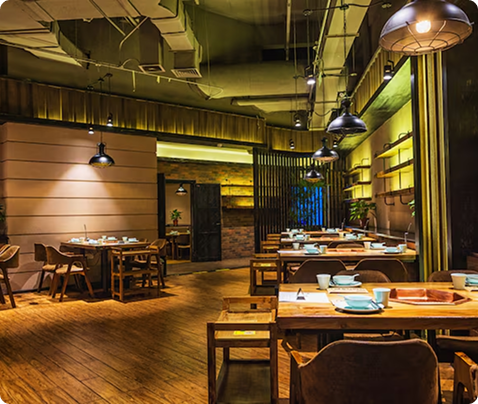

Nossa história
O Restaurante Apollo nasceu do sonho de Ricardo Silva, um empreendedor apaixonado por gastronomia e experiências memoráveis. Aos 38 anos, após anos vivenciando diferentes culturas culinárias e observando tendências internacionais, Ricardo decidiu trazer para Natal um conceito ainda pouco explorado: a união entre a sofisticação da gastronomia mediterrânea e a diversidade da culinária internacional premium.
Fundado há cinco anos, o Apollo surgiu com a proposta de ser mais do que um restaurante — um destino. Inspirado na elegância e no simbolismo do nome “Apollo”, que remete à perfeição, à arte e à harmonia, Ricardo idealizou um espaço onde cada detalhe fosse cuidadosamente pensado: da arquitetura minimalista à apresentação impecável dos pratos.
Desde o início, o restaurante se destacou pelo compromisso com ingredientes frescos, técnicas refinadas e uma equipe altamente qualificada. A cozinha, liderada por profissionais experientes, combina tradição e inovação, criando pratos que equilibram sabor, estética e identidade. Massas artesanais, frutos do mar selecionados e sobremesas sofisticadas tornaram-se marcas registradas da casa.

Hoje, consolidado no mercado local, o Apollo vive um novo momento: expansão e modernização. Sem abrir mão da sua essência, o restaurante busca integrar ainda mais tecnologia e inovação à experiência gastronômica, reforçando seu posicionamento como referência em alta gastronomia na cidade.
Mais do que servir refeições, o Apollo cria memórias — seja em um jantar romântico, uma celebração especial ou um encontro de negócios. Cada visita é pensada para ser única, elegante e inesquecível.